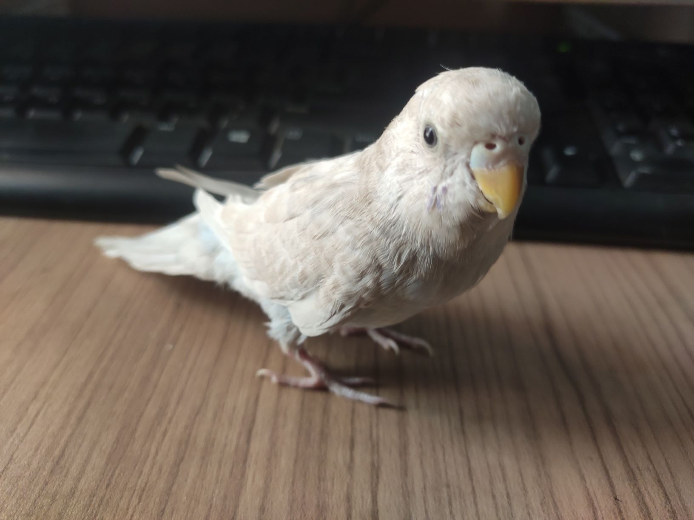

I am testing and learning how to make a branch. Making a branch and then marging them into the main one is the best way to wark in a group. To make a new branch, switch to that, marging that to the main one and then push it to the git hub will do the work.
I just added a new branch named "pakhi".Now adding a image of a bird in here... And then marging this to the main branch.
The branch is successfully working. If I make any change in the code, I have to push it. And it will go to the branch.